72 Stunden gereift
Nur Mehl, Wasser, Salz und Hefe. Die lange Teigruhe von 72 Stunden macht die Pizza leicht, luftig und bekömmlich.
Für Hochzeiten, Firmenfeiern, Geburtstage und private Feste in Mannheim und Umgebung. Alternativ buchbar: unsere Kaffee-Bar, Aperol-Bar oder ein Sektempfang.
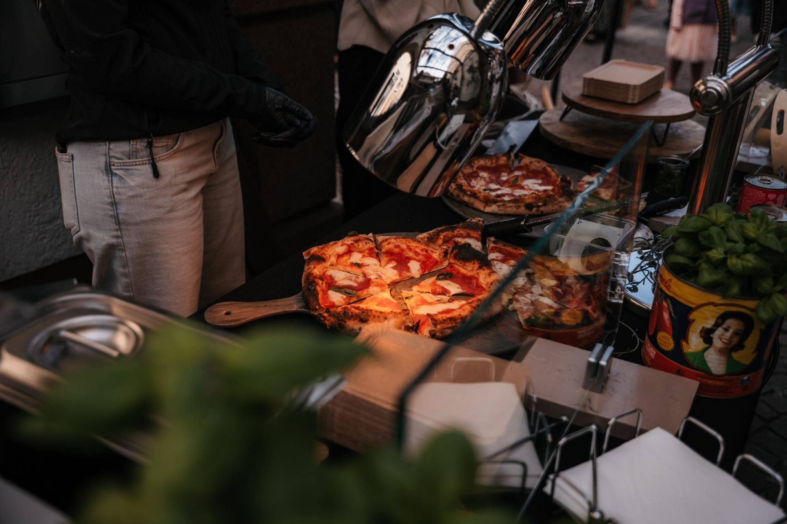
So, wie man sie in Neapel isst: ein luftiger Rand, eine dünne, weiche Mitte und Zutaten, hinter denen eine Geschichte steht.
Nur Mehl, Wasser, Salz und Hefe. Die lange Teigruhe von 72 Stunden macht die Pizza leicht, luftig und bekömmlich.
Gebacken wird in Gozney-Arc-XL-Öfen. In nur 70 bis 90 Sekunden geht der Rand luftig auf.
San-Marzano-Tomaten von La Carmela aus der Gegend um Roccapiemonte, wo die Oma herkommt. Fior di Latte, frisches Basilikum vom regionalen Obsthändler und Olivenöl aus Tricarico bei Matera, der Heimat der Mama.
Jede Pizza wird vor Ihren Gästen belegt, gebacken und sofort serviert.
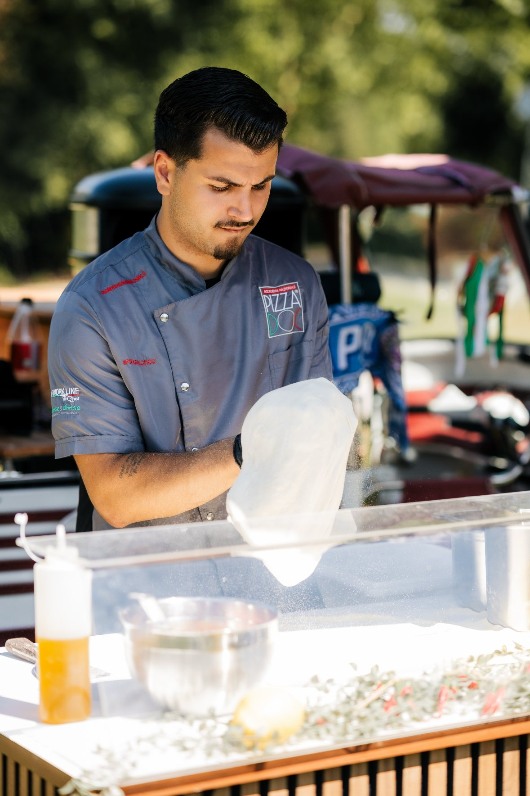
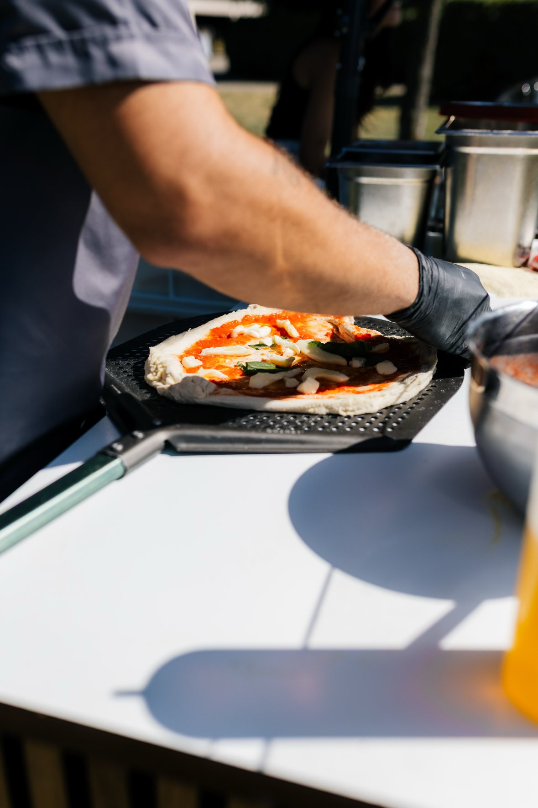
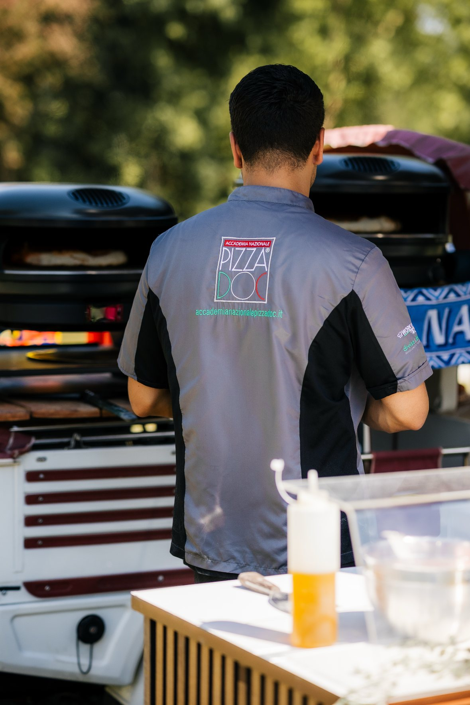
Neapel ist die Heimat der Pizza Napoletana und die Heimat unserer Familie.
Hier wurde die Pizza erfunden, hier wird sie bis heute mit Hingabe gebacken: in wenigen Sekunden, bei großer Hitze, mit einfachen, sehr guten Zutaten. Genau so backen wir sie auch. Unsere Wurzeln reichen von Kampanien bis in die Basilikata, und viele unserer Zutaten kommen aus genau diesen Regionen.
Die Liebe zur Stadt, zu ihrer Pizza und zu ihrem Fußball steckt in jedem Teig, den wir backen. Mit uns kommt ein Stück Neapel auf Ihr Fest.
Forza Napoli!
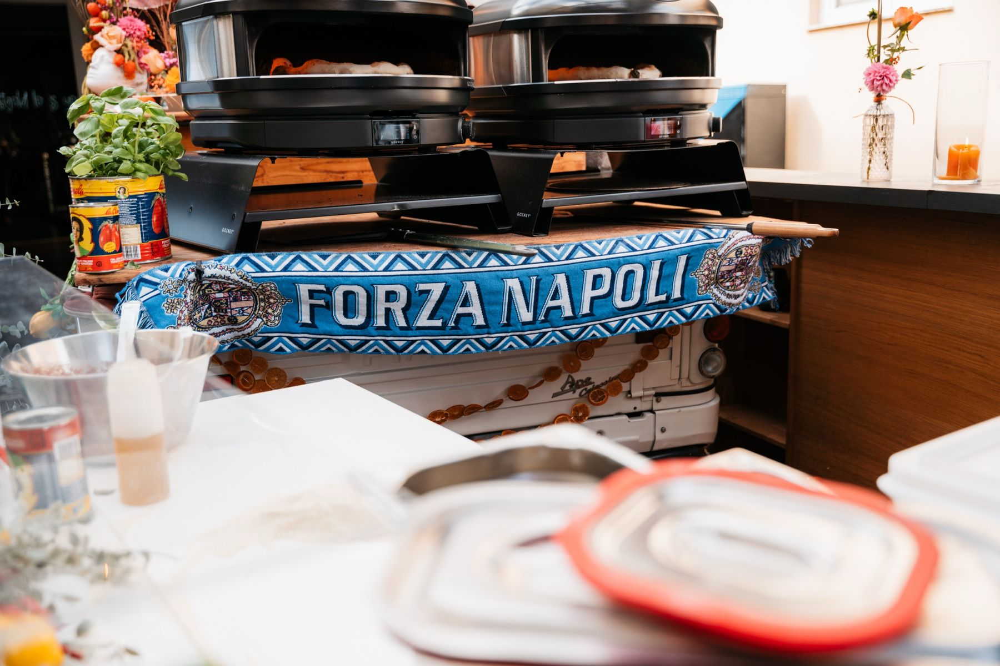
Wählen Sie das Angebot, das zu Ihrem Fest passt: Pizza-Catering, Kaffee-Bar, Aperol-Bar oder Sektempfang. Jedes Angebot ist einzeln buchbar.
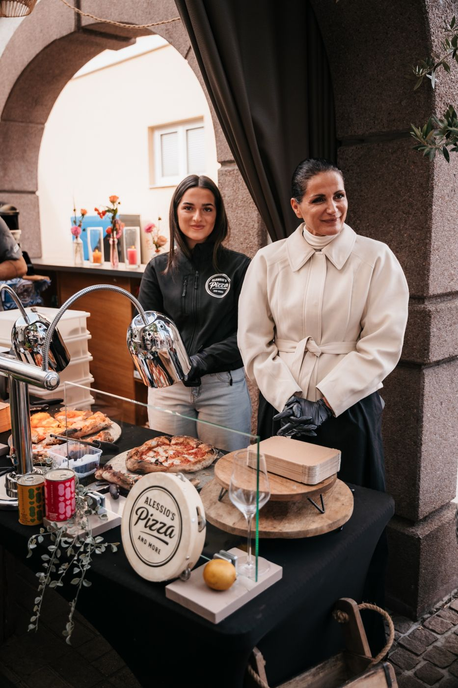
Wir backen live vor Ort. Ihre Gäste sehen zu, wie der Teig gezogen, belegt und in unseren Gozney-Öfen gebacken wird.
Ein guter Kaffee, frisch zubereitet wie in einer italienischen Bar. Als eigenes Angebot für Ihren Empfang, Ihre Feier oder Ihr Firmenevent.
Unsere Aperol-Bar bringt das Aperitivo-Gefühl auf Ihr Fest, auf Wunsch auch alkoholfrei.
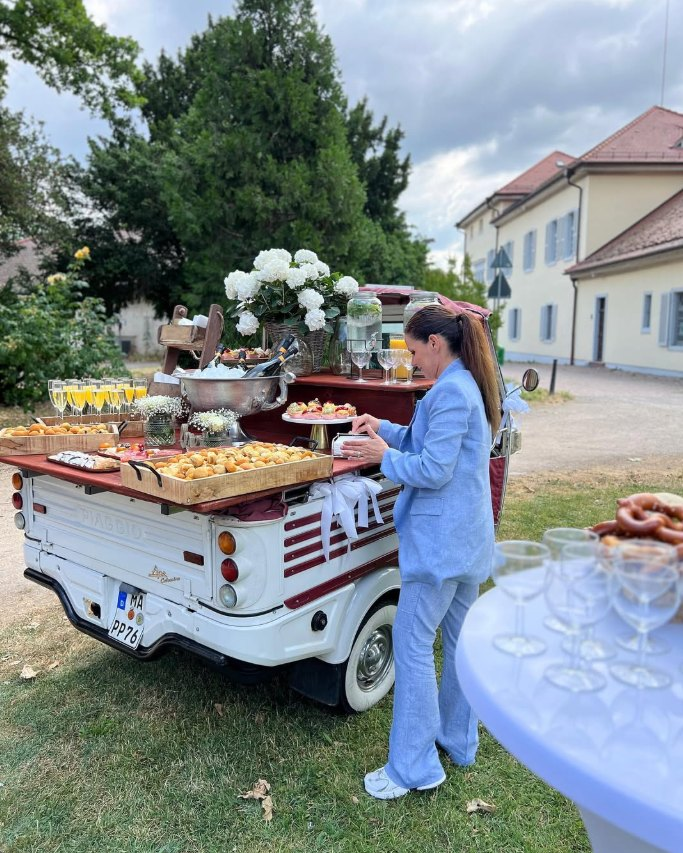
Nach der Trauung oder zur Begrüßung: Prosecco, Sekt und alkoholfreie Alternativen mit Service.
Antipasti-Platten, Tiramisù, Limonata oder Ihre eigenen Wünsche. Sprechen Sie uns an.
Wunschpizzen sind ebenfalls möglich. (gegen Aufpreis)
Informationen zu Allergenen und Zusatzstoffen erhalten Sie auf Anfrage und vor Ort.
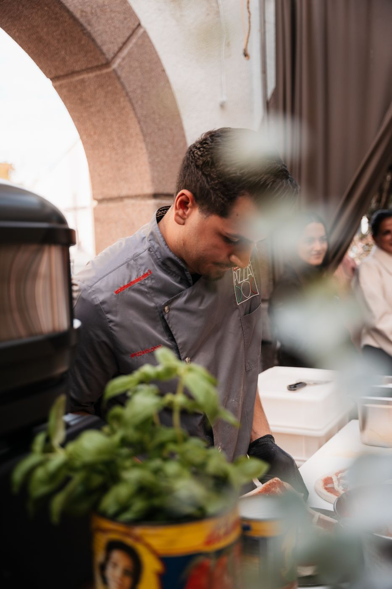
Pizza liegt bei uns in der Familie. Mein Vater Gennaro, den alle nur Naro nennen, steht mit Naro’s Singing Pizza seit Jahren auf Events. Bei ihm steht die Show im Vordergrund: Er singt, unterhält und backt dabei echte Pizza Napoletana.
In den letzten zehn Jahren habe ich an seiner Seite unzählige Events begleitet. Aus diesen Erfahrungen ist mein eigenes Konzept entstanden: Alessio's Pizza and More. Hier liegt der Fokus ganz auf der Pizza, als Catering-Lösung für Ihr Fest. So haben wir unser Familiengeschäft erweitert.
Und wenn Sie beides möchten: Wir treten auch gemeinsam auf. Ich sorge dafür, dass alle Gäste satt und glücklich werden, und mein Vater sorgt mit Musik und Pizza für die Stimmung.
Zu Naro’s Singing PizzaUnterstützt werde ich, genau wie mein Vater, von der ganzen Familie. Sie packt immer mit an, und ohne sie würde es nicht gehen. Bei uns sind Sie also nicht nur Kunde, sondern ein bisschen auch Teil der Famiglia.
Alessio
Datum, Ort und ungefähre Gästezahl genügen für den Anfang.
Sie bekommen ein persönliches Angebot, passend zu Ihrem Event.
Unsere Sorten von der Karte sind fest eingeplant. Sonderwünsche besprechen wir gern. Datum, Uhrzeit und Zeitplan stimmen wir gemeinsam ab.
Wir bauen auf, backen live und räumen am Ende wieder ab. Sie lehnen sich zurück.
Alles andere bringen wir mit: Öfen, Theke, Zutaten und Zubehör. Ansonsten sind wir komplett autark.
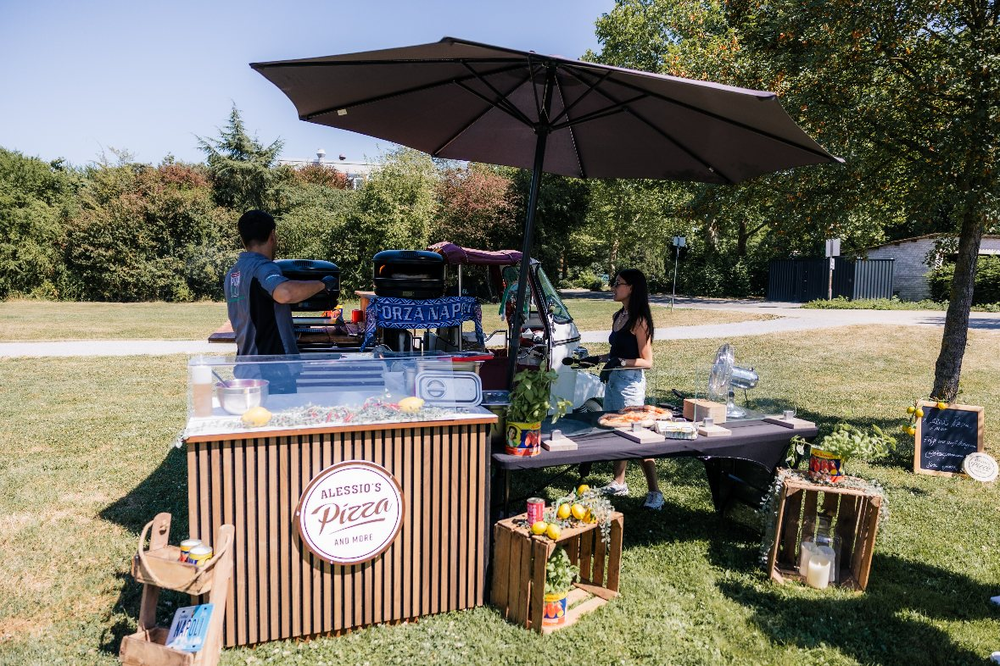
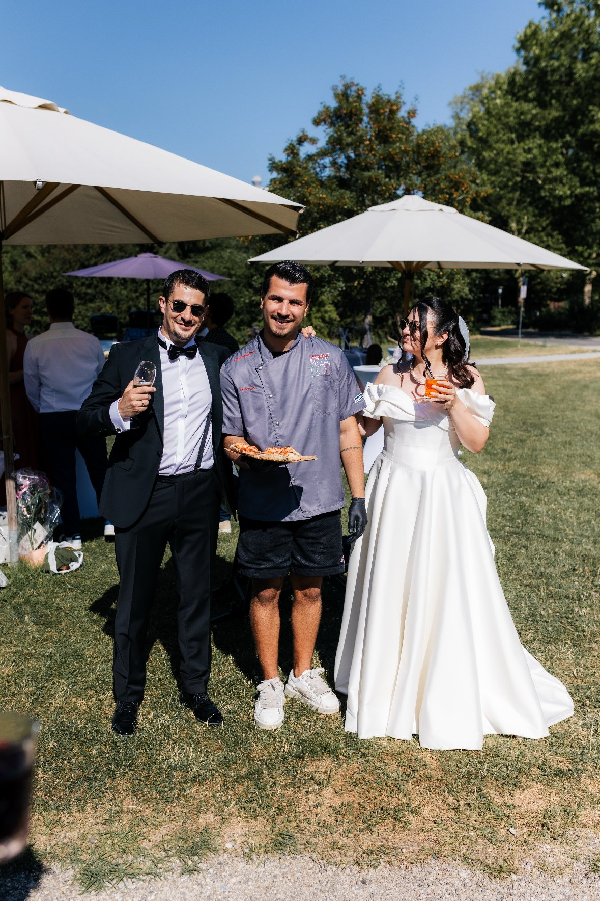
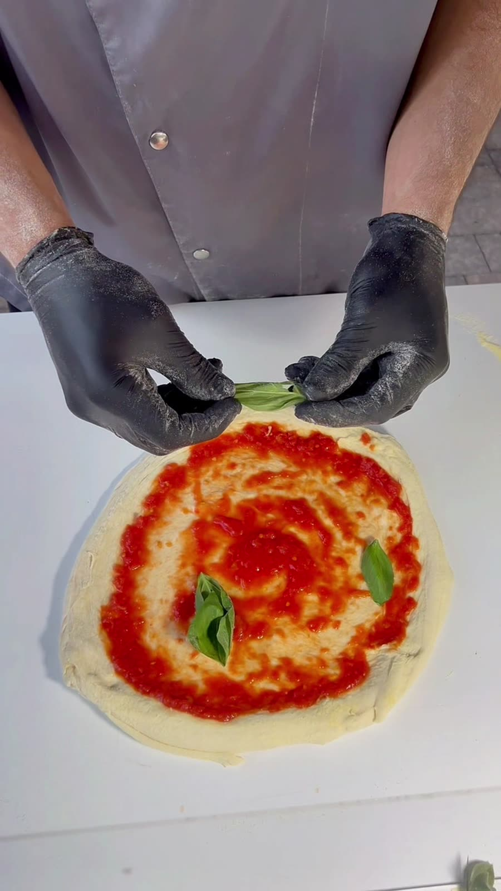
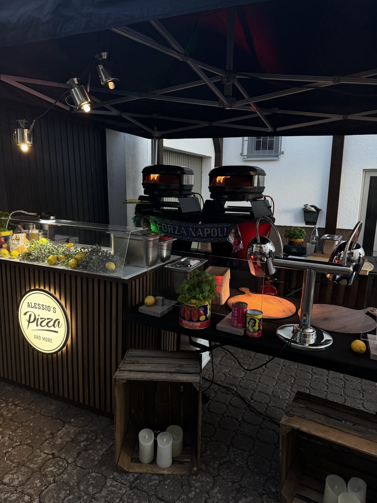
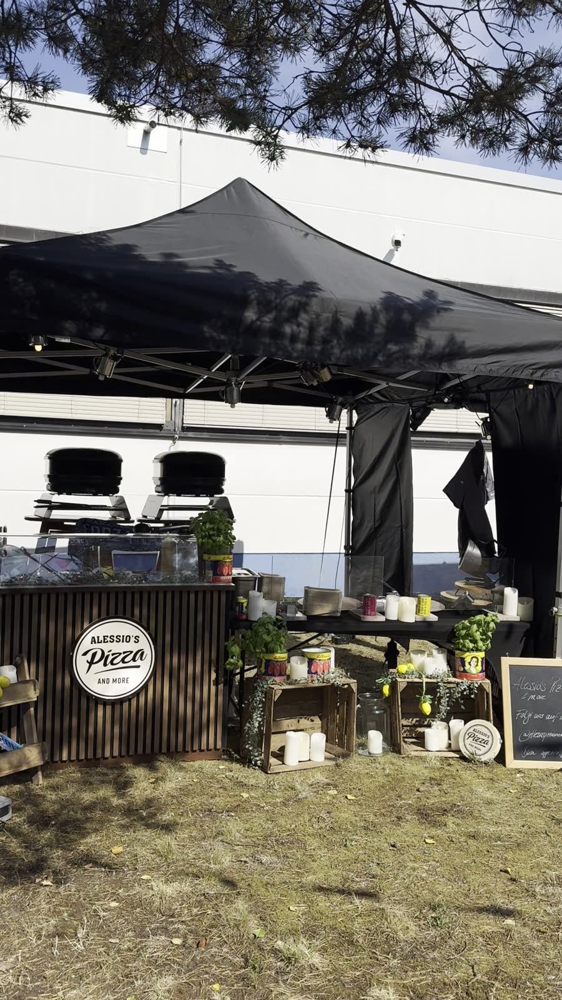
Mehr Bilder und aktuelle Events finden Sie auf Instagram.
@alessiospizzaandmoreFüllen Sie das Formular aus und senden Sie Ihre Anfrage ganz bequem per WhatsApp oder E-Mail. Wir melden uns schnellstmöglich mit einem unverbindlichen Angebot.
Alessio's Pizza and More ist ein Angebot von Naro’s Singing Pizza, betrieben von der Gennaro und Maria Vitale GbR, Mannheim. Alle Anbieterangaben im Impressum.